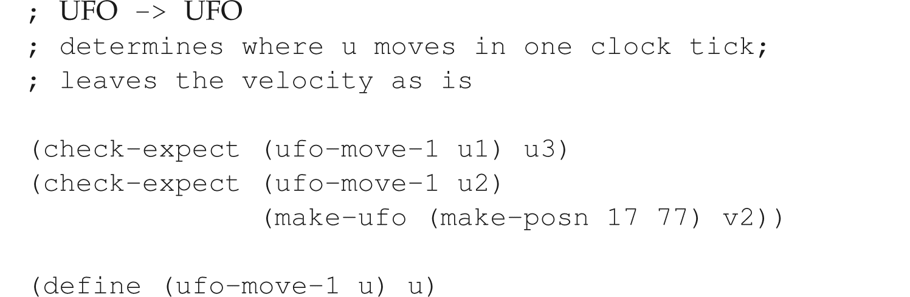
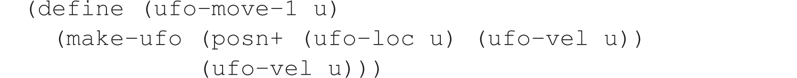
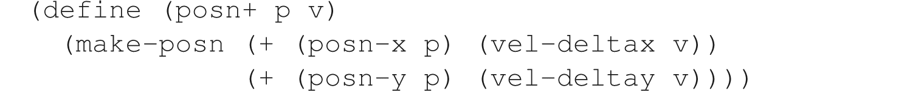

5.6 Programming with Structures
Proper programming calls for data definitions. With the introduction of structure type definitions, data definitions become interesting. Remember that a data definition provides a way of representing information into data and interpreting that data as information. For structure types, this calls for a description of what kind of data goes into which field. For some structure type definitions, formulating such descriptions is easy and obvious:
(define-struct posn [x y])
; A Posn is a structure:
; (make-posn Number Number)
; interpretation a point x pixels from left, y from top
It doesn’t make any sense to use other kinds of data to create a posn. Similarly, all fields of entry—our structure type definition for entries on a contact list—are clearly supposed to be strings, according to our usage in the preceding section:
(define-struct entry [name phone email])
; An Entry is a structure:
; (make-entry String String String)
; interpretation a contact's name, phone#, and email
For both posn and entry, a reader can easily interpret instances of these structures in the application domain.
Contrast this simplicity with the structure type definition for ball, which obviously allows at least two distinct interpretations:
(define-struct ball [location velocity])
; A Ball-1d is a structure:
; (make-ball Number Number)
; interpretation 1 distance to top and velocity
; interpretation 2 distance to left and velocity
Whichever one we use in a program, we must stick to it consistently. As chapter 5.4 shows, however, it is also possible to use ball structures in an entirely different manner:
; A Ball-2d is a structure:
; (make-ball Posn Vel)
; interpretation a 2-dimensional position and velocity
(define-struct vel [deltax deltay])
; A Vel is a structure:
; (make-vel Number Number)
; interpretation (make-vel dx dy) means a velocity of
; dx pixels [per tick] along the horizontal and
; dy pixels [per tick] along the vertical direction
Here we name a second collection of data, Ball-2d, distinct from Ball-1d, to describe data representations for balls that move in straight lines across a world canvas. In short, it is possible to use one and the same structure type in two different ways. Of course, within one program, it is best to stick to one and only one use; otherwise you are setting yourself up for problems.
Also, Ball-2d refers to another one of our data definitions, namely, the one for Vel. While all other data definitions have thus far referred to built-in data collections (Number, Boolean, String), it is perfectly acceptable, and indeed common, that one of your data definitions refers to another.
Exercise 72. Formulate a data definition for the above phone structure type definition that accommodates the given examples.
Next formulate a data definition for phone numbers using this structure type definition:
(define-struct phone# [area switch num])
Historically, the first three digits make up the area code, the next three the code for the phone switch (exchange) of your neighborhood, and the last four the phone with respect to the neighborhood. Describe the content of the three fields as precisely as possible with intervals. 
At this point, you might be wondering what data definitions really mean. This question, and its answer, is the topic of the next section. For now, we indicate how to use data definitions for program design.
Here is a problem statement to set up some context:
Sample Problem Your team is designing an interactive game program that moves a red dot across a 100 × 100 canvas and allows players to use the mouse to reset the dot. Here is how far you got together:
(define MTS (empty-scene 100 100))
(define DOT (circle 3 "solid" "red"))
; A Posn represents the state of the world.
; Posn -> Posn
(define (main p0)
(big-bang p0
[on-tick x+]
[on-mouse reset-dot]
[to-draw scene+dot]))
Your task is to design scene+dot, the function that adds a red dot to the empty canvas at the specified position.
The problem context dictates the signature of your function:
; Posn -> Image
; adds a red spot to MTS at p
(define (scene+dot p) MTS)
Adding a purpose statement is straightforward. As chapter 3.1 mentions, it uses the function’s parameter to express what the function computes.
Now we work out a couple of examples and formulate them as tests:
(check-expect (scene+dot (make-posn 10 20))
(place-image DOT 10 20 MTS))
(check-expect (scene+dot (make-posn 88 73))
(place-image DOT 88 73 MTS))
Given that the function consumes a Posn, we know that the function can extract the values of the x and y fields:
(define (scene+dot p)
(… (posn-x p) … (posn-y p) …))
Once we see these additional pieces in the body of the function, the rest of the definition is straightforward. Using place-image, the function puts DOT into MTS at the coordinates contained in p:
(define (scene+dot p)
(place-image DOT (posn-x p) (posn-y p) MTS))
A function may produce structures. Let’s resume our sample problem from above because it includes just such a task:
Sample Problem A colleague is asked to define x+, a function that consumes a Posn and increases the x-coordinate by 3.
Recall that the x+ function handles clock ticks.
We can adapt the first few steps of the design of scene+dot:
; Posn -> Posn
; increases the x-coordinate of p by 3
(check-expect (x+ (make-posn 10 0)) (make-posn 13 0))
(define (x+ p)
(… (posn-x p) … (posn-y p) …))
The signature, the purpose, and the example all come out of the problem statement. Instead of a header—a function with a default result—our sketch contains the two selector expressions for Posns. After all, the information for the result must come from the inputs, and the input is a structure that contains two values.
Finishing the definition is easy now. Since the desired result is a Posn, the function uses make-posn to combine the pieces:
(define (x+ p)
(make-posn (+ (posn-x p) 3) (posn-y p)))
Exercise 73. Design the function posn-up-x, which consumes a Posn p and a Number n. It produces a Posn like p with n in the x field.
A neat observation is that we can define x+ using posn-up-x:
(define (x+ p)
(posn-up-x p (+ (posn-x p) 3)))
Note Functions such as posn-up-x are often called updaters or functional setters. They are extremely useful when you write large programs.
A function may also produce instances from atomic data. While make-posn is a built-in primitive that does so, our running problem provides another fitting illustration:
Sample Problem Another colleague is tasked to design reset-dot, a function that resets the dot when the mouse is clicked.
To tackle this problem, you need to recall from chapter 3.6 that mouse-event handlers consume four values: the current state of the world, the x- and y-coordinates of the mouse click, and a MouseEvt.
By adding the knowledge from the sample problem to the program design recipe, we get a signature, a purpose statement, and a header:
; Posn Number Number MouseEvt -> Posn
; for mouse clicks, (make-posn x y); otherwise p
(define (reset-dot p x y me) p)
Examples for mouse-event handlers need a Posn, two numbers, and a MouseEvt, which is just a special kind of String. A mouse click, for example, is represented with one of two strings: "button-down" and "button-up". The first one signals that a user clicked the mouse button, the latter signals its release. With this in mind, here are two examples, which you may wish to study and interpret:
(check-expect
(reset-dot (make-posn 10 20) 29 31 "button-down")
(make-posn 29 31))
(check-expect
(reset-dot (make-posn 10 20) 29 31 "button-up")
(make-posn 10 20))
Although the function consumes only atomic forms of data, its purpose statement and the examples suggest that it differentiates between two kinds of MouseEvts: "button-down" and all others. Such a case split suggests a cond expression:
(define (reset-dot p x y me)
(cond
[(mouse=? "button-down" me) (… p … x y …)]
[else (… p … x y …)]))
Following the design recipe, this skeleton mentions the parameters to remind you of what data is available.
The rest is straightforward again because the purpose statement itself dictates what the function computes in each of the two cases:
(define (reset-dot p x y me)
(cond
[(mouse=? me "button-down") (make-posn x y)]
[else p]))
As above, we could have mentioned that make-posn creates instances of Posn, but you know this and we don’t need to remind you constantly.
Exercise 74. Copy all relevant constant and function definitions to DrRacket’s definitions area. Add the tests and make sure they pass. Then run the program and use the mouse to place the red dot.
Many programs deal with nested structures. We illustrate this point with another small excerpt from a world program:
Sample Problem Your team is designing a game program that keeps track of an object that moves across the canvas at changing speed. The chosen data representation requires two data definitions:
(define-struct ufo [loc vel])
; A UFO is a structure:
; (make-ufo Posn Vel)
; interpretation (make-ufo p v) is at location
; p moving at velocity v
Remember, it’s about physics.
It is your task to develop ufo-move-1. The function computes the location of a given UFO after one clock tick passes.
Let us start with some examples that explore the data definitions a bit:
(define v1 (make-vel 8 -3))
(define v2 (make-vel -5 -3))
(define p1 (make-posn 22 80))
(define p2 (make-posn 30 77))
(define u1 (make-ufo p1 v1))
(define u2 (make-ufo p1 v2))
(define u3 (make-ufo p2 v1))
(define u4 (make-ufo p2 v2))
The order of these definitions matters. See intermezzo 1.
The first four are elements of Vel and Posn. The last four combine the first four in all possible combinations.
Next we write down a signature, a purpose, some examples, and a function header:

For the function examples, we use the data examples and our domain knowledge of positions and velocities. Specifically, we know that a vehicle that is moving north at 60 miles per hour and west at 10 miles per hour is going to end up 60 miles north from its starting point and 10 miles west after one hour of driving. After two hours, it will be 120 miles north from the starting point and 20 miles to its west.
As always, a function that consumes a structure instance can (and probably must) extract information from the structure to compute its result. So once again we add selector expressions to the function definition:
(define (ufo-move-1 u)
(… (ufo-loc u) … (ufo-vel u) …))
Note The selector expressions raise the question whether we need to refine this sketch even more. After all, the two expressions extract instances of Posn and Vel, respectively. These two are also structure instances, and we could extract values from them in turn. Here is what the resulting skeleton would look like:
; UFO -> UFO
(define (ufo-move-1 u)
(… (posn-x (ufo-loc u)) …
… (posn-y (ufo-loc u)) …
… (vel-deltax (ufo-vel u)) …
… (vel-deltay (ufo-vel u)) …))
Doing so obviously makes the sketch look quite complex, however. For truly realistic programs, following this idea to its logical end would create incredibly complex program outlines. More generally,
If a function deals with nested structures, develop one function per level of nesting.
In the second part of the book, this guideline becomes even more important and we refine it a bit. End
Here we focus on how to combine the given Posn and the given Vel in order to obtain the next location of the UFO—because that’s what our physics knowledge tells us. Specifically, it says to “add” the two together, where “adding” can’t mean the operation we usually apply to numbers. So let us imagine that we have a function for adding a Vel to a Posn:
; Posn Vel -> Posn
; adds v to p
(define (posn+ p v) p)
Writing down the signature, purpose, and header like this is a legitimate way of programming. It is called “making a wish” and is a part of “making a wish list” as described in chapter 3.4.
The key is to make wishes in such a way that we can complete the function that we are working on. In this manner, we can split difficult programming tasks into different tasks, a technique that helps us solve problems in reasonably small steps. For the sample problem, we get a complete definition for ufo-move-1:

Because ufo-move-1 and posn+ are complete definitions, we can even click RUN, which checks that DrRacket doesn’t complain about grammatical problems with our work so far. Naturally, the tests fail because posn+ is just a wish, not the function we need.
Now it is time to focus on posn+. We have completed the first two steps of the design (data definitions, signature/purpose/header), so we must create examples. One easy way to create functional examples for a “wish” is to use the examples for the original function and to turn them into examples for the new function:
(check-expect (posn+ p1 v1) p2)
(check-expect (posn+ p1 v2) (make-posn 17 77))
In geometry, the operation corresponding to posn+ is called a translation.
For this problem, we know that (ufo-move-1 (make-ufo p1 v1)) is to produce p2. At the same time, we know that ufo-move-1 applies posn+ to p1 and v1, implying that posn+ must produce p2 for these inputs. Stop! Check our manual calculations to ensure that you are following what we are doing.
We are now able to add selector expressions to our design sketch:
(define (posn+ p v)
(… (posn-x p) … (posn-y p) …
… (vel-deltax v) … (vel-deltay v) …))
Because posn+ consumes instances of Posn and Vel and because each piece of data is an instance of a two-field structure, we get four expressions. In contrast to the nested selector expressions from above, these are simple applications of a selector to a parameter.
If we remind ourselves what these four expressions represent, or if we recall how we computed the desired results from the two structures, our completion of the definition of posn+ is straightforward:

The first step is to add the velocity in the horizontal direction to the x-coordinate and the velocity in the vertical direction to the y-coordinate. This yields two expressions, one per new coordinate. With make-posn we can combine them into a single Posn again.
Exercise 75. Enter these definitions and their test cases into the definitions area of DrRacket and make sure they work. This is the first time that you have dealt with a “wish,” and you need to make sure you understand how the two functions work together.